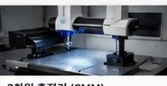
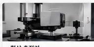
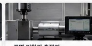
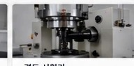

정밀 측정공차 검증

QUALITY CONTROL
품질 관리
정밀한 측정과 철저한 검증으로
신뢰할 수 있는 품질을 약속합니다
검사와 데이터 기반 품질 시스템으로 제품의 일관성과 안정성을 확보하고, 고객이 믿고 사용할 수 있는 품질을 제공합니다.
0103
QUALITY CONTROL
검사와 데이터 기반 품질 시스템으로 제품의 일관성과 안정성을 확보하고, 고객이 믿고 사용할 수 있는 품질을 제공합니다.
QUALITY CONTROL
전 공정 검사와 품질 관리 체계로 고객 신뢰를 높입니다.

정밀 치수 및 형상 측정

고정밀 형상 및 공차 검사

표면 품질 및 가공기 분석

소재 경도 및 열처리 상태 평가
정밀 치수 및 형상 측정
고정밀 형상 및 공차 검사
표면 품질 및 가공기 분석
소재 경도 및 열처리 상태 평가